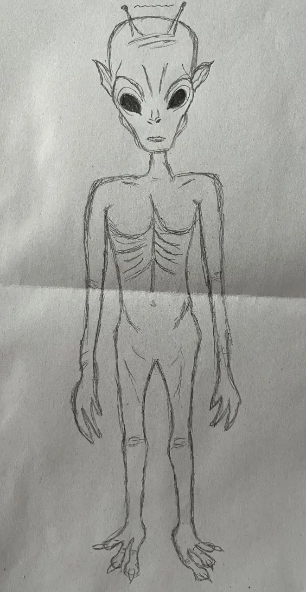
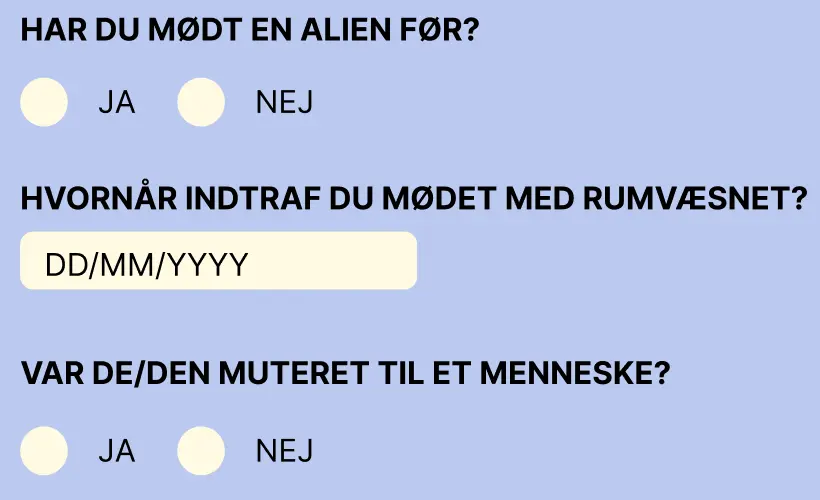

04: ANIMATION
Tema 4 introducerede mange nye elementer, som vi skulle lære helt fra bunden. Vi blev blandt andet introduceret til programmeringssproget JavaScript, som jeg stadig synes kan være lidt svært at forstå. Heldigvis har hjælpen fra underviserne været helt uvurderlig og har gjort det muligt for mig at løse den opgave, vi fik tildelt.
Opgaven gik ud på at lave en "emergency"-hjemmeside, hvor emnet var selvvalgt, men hvor wireframes samt HTML- og CSS-delene var givet på forhånd. Jeg valgte at lave en humoristisk side om aliens, der er kommet til jorden for at kidnappe menneskebørn. Når jeg tænker på aliens, tænker jeg straks på tegneserier, så derfor valgte jeg at give siden et comic-inspireret udtryk.
Vi blev også introduceret til Adobe Illustrator, hvor vi skulle designe en infografik til hjemmesiden. Her valgte jeg at lave en forside, der efterligner en tegneserieavis, hvilket faldt mig helt naturligt, da jeg jo allerede havde comic-temaet i tankerne.
Et tredje element, vi blev introduceret til, var forms. Jeg synes, det var relativt nemt at sætte formularerne op i HTML og CSS, men det blev straks mere udfordrende, da vi skulle arbejde med at vise svarene i en summary ved hjælp af JavaScript. Her var det dog en stor hjælp at kunne se eksempler på lærernes GitHub, hvilket gjorde det meget lettere at forstå.
Brugen af AI var også en del af opgaven. Her kunne vi benytte AI-genererede billeder og tekster til at skabe de artikler, der skulle vises på forsiden. Det var en spændende mulighed for at eksperimentere med nye teknologier og se, hvordan kunstig intelligens kan understøtte den kreative proces. Det gav en ny dynamik til projektet og gjorde opgaveløsningen både motiverende og lærerig.
Se mit projekt her!: Aliens i Danmark!